Building on the earlier phases of Swiss AI Futures, we turned to people who were already encountering AI in their studies, workplaces and daily lives. We wanted to understand how they experienced it, where they saw value, what worried them and what they expected public policy to do.
We began with an online module about experience, attitudes and policy preferences, then invited a subset of participants to continue the conversation in four workshops. Two were held in Zurich in German-speaking Switzerland, one in German and one in English; two were held in Lausanne in French-speaking Switzerland, one in French and one in English. At the start of each workshop, we shared the aggregate online results so that everyone could see where views converged, where they differed and which questions were still open. That common overview brought the main discussion points into focus before the groups developed more concrete recommendations, conditions and unresolved questions.
As moderators, we asked each group to leave behind a structured record through Post-its, propositions, votes and participant-reviewed summaries. Those outputs allow us to report the results clearly, although much of the value emerged in the conversation itself, as people explained experiences, listened to unfamiliar concerns, reconsidered ideas and worked through disagreement together.
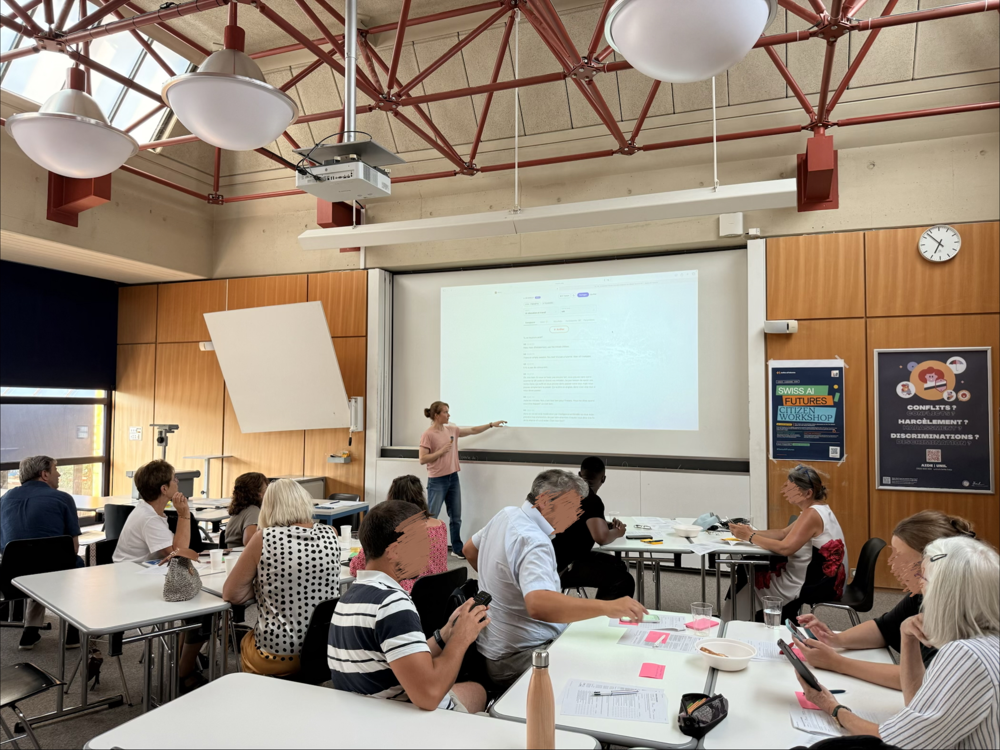
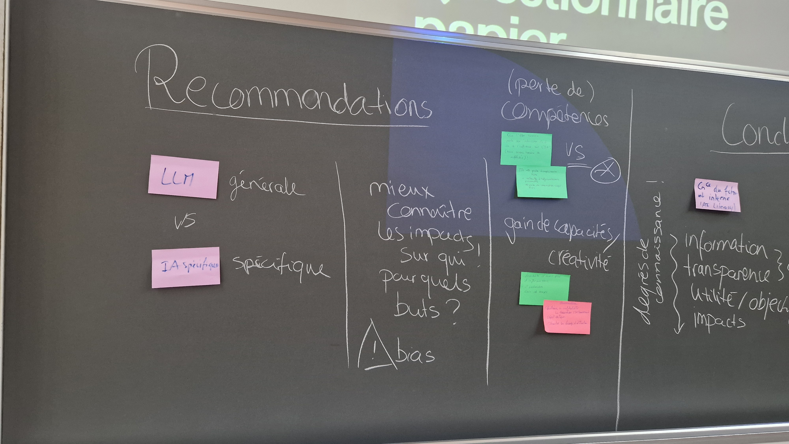
Citizen workshops in practice: participants review ideas together and record their recommendations on sticky notes. Photos from the Swiss AI Futures workshops, August 2026.
Across these conversations, acceptance of AI nearly always came with conditions. Participants could see real value for learning and work, and they wanted that value to develop alongside strong protection for human skills, privacy, accountability, information integrity and fair access.
Close to 200 people entered the online module, and by 11 August the data export contained 135 identifiable records. Preparing them for analysis meant removing entries that lacked consent or eligibility and those that were too sparse, duplicated another response or came from testing. After this tidying, 103 complete or sufficiently usable records formed the cleaned dataset used throughout the chapter; the number is lower for questions that some people left unanswered. The resulting group covered several ages, linguistic regions and cantons, while also including many highly educated people and frequent AI users.
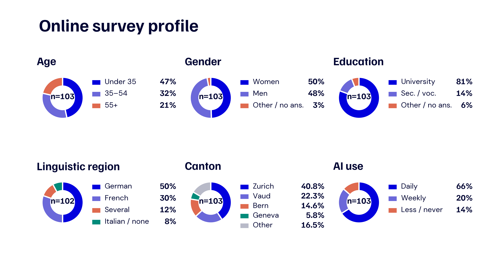
Figure 19: Profile of the online survey participants. The charts use percentages so that age, gender, education, linguistic region, canton, and frequency of AI use can be compared at a glance. Linguistic region has n = 102; all other panels have n = 103.
Looking across the 103 cleaned profiles, 81% had a university degree and 66% used AI daily or almost daily. Half identified with German-speaking Switzerland and 30% with French-speaking Switzerland. Zurich, Vaud and Bern were the most common cantons; “Other” combines eight additional cantons with mixed or unclear answers.
We kept participation open to eligible adults and did not recruit to demographic quotas. In practice, the people who encountered the invitation and were able to join were shaped by our project and civil-society networks, the TA-SWISS network, digital channels, the ETH Decision Lab/UAST pool, and the location and language of the workshops. The findings should therefore be read as structured input from an engaged group with substantial AI experience; they cannot be extrapolated to the Swiss population as a whole.
When a subset of the online participants joined us in person, the composition of the four rooms varied in age, education and daily AI use. Table 4.1 uses the screened online profiles available for each room, which means that the denominators differ between workshops.
Table 4.1: Workshop group profiles
| Workshop | Participants | Estimated mean age | University degree | Daily AI use |
|---|---|---|---|---|
| Zurich, German | 20 | 33 years | 67% | 67% |
| Zurich, English | 35 | 27 years | 89% | 67% |
| Lausanne, French | 14 | 50 years | 56% | 44% |
| Lausanne, English | 7 | 42 years | 100% | 80% |
| Total | 76 | 35 years | 77% | 64% |
Because the survey recorded age bands rather than exact ages, the means in the table are estimates based on each band’s midpoint, with the open-ended 65+ band treated as 70 years. The total profile values combine the 47 screened online profiles that we could link to workshop rooms, while the participant count covers all 76 people who attended.
Around the tables, these recruitment patterns became visible in the character of each room. The English-language workshop in Zurich, for example, included many people with ties to ETH and consequently had a younger, highly educated profile, while the French-language group in Lausanne was older and used AI less often. Knowing this helps place each conversation in context, together with the differences in group size and topic sequence, but it does not tell us that language or location caused the views we heard.
With this background in mind, all four groups worked through the same two broad themes, education and work, while giving different amounts of attention to the issues within them. The following points capture where each conversation spent most of its time without turning the comparison into a ranking.
What each workshop mainly discussed
These descriptions draw on recurring language in the Post-its and propositions, the distribution of statement votes, and what we observed while moderating the rooms. Across all four groups, education usually began with what learning should preserve, whereas work moved more quickly towards responsibility, transition and the distribution of gains. Each room placed its own emphasis within that shared agenda, and these impressions belong to the four sessions themselves; they should not be generalised to the cities or language regions in which the workshops took place.
Taken together, the material connects the breadth of the online phase with the detail of the workshops. The cleaned online dataset contains 103 profiles and 485 usable free-text answers; the four workshops on 11 and 12 August 2026 produced 140 Post-it rows and 136 propositions. All 76 workshop participants completed a post-workshop questionnaire about their final views and the process, and each repeated item has between 36 and 44 matched before-and-after answers. Adults living in Switzerland were eligible to take part. The ETH Zurich Ethics Committee approved the protocol and revised workshop procedure (26 ETHICS-116), participants gave informed consent, contact and payment data were kept separate from research data, and no audio recordings were retained.
Among the people whose responses were included, AI was already woven into everyday life: 86% used it at least weekly, and 80% said it had affected their work, study or job search at least moderately. The benefits they recognised were immediate and practical, especially saving time, selected by 76%, and making complex topics easier to understand, selected by 69%. This use crossed between parts of life, with 80% reporting AI use in a personal context, 78% at work and 52% while studying; many moved between several settings, tasks, tools and model families.
Table 4.2: How online participants used AI
| Aspect | Most common answers |
|---|---|
| Main tasks (n = 103) | Searching or summarising information 81%; writing or editing text 68%; translation 55%; brainstorming 49%; coding or technical help 46%; administrative tasks 26%. |
| Contexts (n = 103) | Personal life 80%; work 78%; study 52%; entertainment or curiosity 46%; civic or political information 19%; public services or administration 17%. |
| Interfaces and tools (n = 102) | Chatbots such as ChatGPT, Claude, or Gemini 88%; search engines 61%; coding tools or IDEs 26%; workplace tools 22%; writing tools 20%; image, video, or design tools 20%. |
| Model families (n = 103) | OpenAI, such as GPT-4 or GPT-5, 52%; Anthropic Claude 50%; Google Gemini 43%; Microsoft Copilot 21%; Meta/Llama 4%; other models 22%; unsure which model 5%. |
Because people could select several answers, the percentages within each row can add to more than 100%.
Reading the free-text accounts gave these categories a much more recognisable shape. Students wrote about bibliographic searches and help with difficult concepts; people at work described documentation, correspondence, translation, coding, software testing and the automation of repetitive tasks. Many moved freely between chatbots, search, coding and workplace tools, often using more than one model family. For policy, this means that AI literacy already reaches across education, employment and everyday consumer life, and guidance tied to one provider will date quickly. Verification, privacy, disclosure and professional standards need to travel across tools. The habit of checking outputs was uneven: among 100 respondents, 57% said they always or often checked an AI answer before relying on it, while 33% did so sometimes, rarely or never.
Even frequent users drew a clear boundary around authority. Of 102 respondents, 78% trusted universities or researchers for guidance about AI, while 14% selected technology companies. When asked about public services, 54% of 92 respondents chose an arrangement in which AI could assist and a person retained the final decision. The free-text answers had the same practical, experienced tone: people welcomed faster research, clearer explanations and better workflows, then asked who could check the result, who benefited and who would remain responsible.
The examples below bring that reasoning into the participants’ own language. They illustrate the main perspectives rather than measuring their frequency; where a workshop proposition was voted on, the result appears in brackets.
Illustrative examples of citizens’ language
Opportunity in education
“AI should lead students to think. Harder tasks can then use it to raise the level of the exercise.” (Post-it, Zurich workshop, English)
“AI should help you find the answer by giving progressive cues, without giving the answer directly.” (Post-it, Lausanne workshop, English)
Conditions in education
“Checking sources, questioning results, and asking what we ultimately want to produce help us distinguish the opportunities from the risks of using AI.” (Online module, translated from French)
“Learn to distinguish facts from opinions and check sources.” (Proposition, Zurich workshop, German; supported by 25 of 25 voters)
Red lines in education
“We lose the opportunity to learn by doing things ourselves. We have not yet found a solution for continuing to educate young people.” (Online module, translated from German)
“Basic skills should first be learned by hand, as mental arithmetic comes before the calculator.” (Proposition, Zurich workshop, German; supported by 24 of 26 voters)
Opportunity at work
“My software-engineering team became about four times more productive. The workflow also became more focused on outcomes and testing.” (Online module, English)
“AI should augment human skills rather than replace them.” (Proposition, Zurich workshop, English; supported by 28 of 32 voters)
Conditions at work
“The wider workforce should also have a say, because they will be affected by the consequences.” (Online module, English)
“Workers should not be subjected to tracking by their employers.” (Proposition, Lausanne workshop, English; supported by 7 of 7 voters)
Red lines at work
“Automated decisions, such as dismissal, are not ethical.” (Post-it, Zurich workshop, German; translated)
“People should retain decision-making authority in sensitive cases.” (Proposition, Zurich workshop, English; supported by 27 of 30 voters)
Conditions for democratic control
“Citizens should be able to express their concerns about AI so that its limits and implications can be agreed collectively.” (Proposition, Lausanne workshop, English; supported by 7 of 7 voters)
“Legislation should address fraudulent uses of AI, such as deepfakes.” (Proposition, Lausanne workshop, English; supported by 7 of 7 voters)
Online quotations and Post-its were lightly edited for length and grammar. Translations preserve the meaning of the source text. Workshop propositions are facilitator-reviewed group summaries rather than verbatim quotations from one speaker.
When the conversation turned to education, the clearest common ground formed around critical evaluation. In the online module, 95% supported teaching students to identify errors and bias and 3% opposed it (n = 77), while teacher preparation, clear school rules and protection of student data each received about 88% to 90% support.
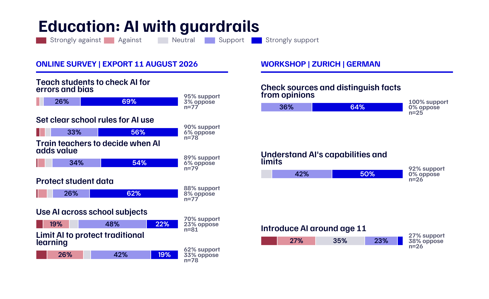
Figure 20: Education with guardrails. The left panel shows selected items from the online export of 11 August 2026 on a seven-point scale grouped into five categories. The right panel shows propositions from the German-speaking Zurich workshop on their original five-point scale. Support, opposition, and the relevant denominator appear beside each bar.
Once the discussion moved from principles to classroom practice, views became more varied. Seventy per cent supported using AI across several school subjects, 62% wanted limits that protect independent learning, and 72% supported redesigning examinations and assignments even though almost one quarter opposed that change. Again and again, participants returned to two practical questions: when direct use should begin and how a school can still see what a student understands independently.
We had also put a related question to a separate group of 23 people in a live vote on 29 May, asking how much AI-supported graded work they would allow at each educational stage. The small, separately recruited group offers an additional indication that should be read separately from the August survey.
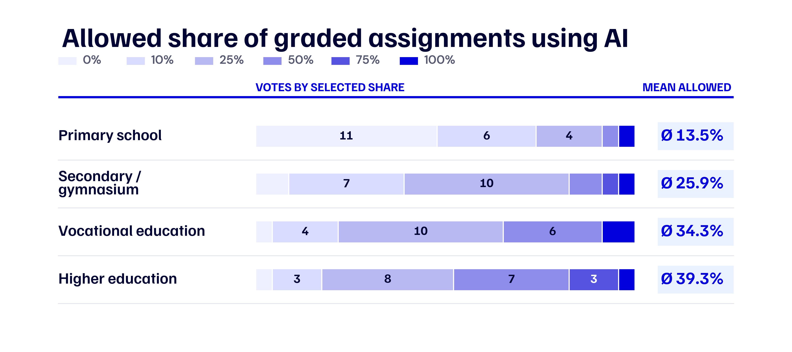
Figure 21: Allowed share of graded assignments using AI. Colours show the selected shares, the numbers in the bars are votes, and the mean allowed share is highlighted on the right. This separate live vote took place on 29 May 2026 with n = 23 at each educational stage.
Answers shifted steadily with the educational stage: in primary school, 17 of 23 people would allow AI in no more than 10% of graded work, while in higher education, 11 of 23 would allow it in at least half. The mean permitted share rose from 13.5% in primary school to 39.3% in higher education.
Inside the workshops, this gradual approach became more concrete through proposals for independent writing before AI editing, disclosure of AI use, supervised assessment, age-appropriate tools and protected spaces for independent work. All 25 recorded voters in the German-speaking Zurich room supported teaching students to distinguish facts from opinions and check sources, while only 7 of 26 supported introducing AI at around age eleven. We heard broad agreement on the need for critical use, with the starting age still unsettled.
As the moderators listened to these exchanges, the conversation kept returning to the purpose of learning. Participants could imagine AI as a scaffold that offers hints, stretches a stronger student or supports a teacher while leaving the learner to form an argument. Their unease grew when the tool made effort invisible or displaced the social contact and productive struggle through which skills develop.
Work brought a different centre of gravity to the discussion, with the strongest support gathering around fairness and human responsibility. Ninety per cent wanted workers to share in productivity gains, 84% favoured restrictions on fully automated hiring, dismissal and performance decisions, 83% supported monitoring for discrimination, and 82% supported training for workers’ current jobs (n = 77 for each item).
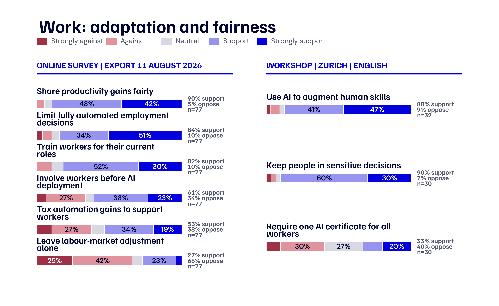
Figure 22: Work, adaptation, and fairness. The left panel shows preferences from the online export of 11 August 2026. The right panel shows selected propositions from the English-speaking Zurich workshop. Both sources use the same five colours; their scales and denominators remain separately labelled.
Agreement weakened when people considered the instruments: worker participation before workplace deployment received 61% support and 34% opposition, while a tax on AI or automation to support affected workers received 53% support and 38% opposition. Only 27% wanted to leave the labour market largely to adjust on its own, an approach rejected by 66%.
During the workshops, participants translated these broad preferences into occupation-specific training, contestable automated decisions and a fairer share of productivity gains. In the English-speaking Zurich room, 88% wanted AI to augment human skills and 90% wanted people to remain involved in sensitive decisions, whereas a single AI certificate for all workers received 33% support. The need to manage the transition was widely recognised, and the choice of instruments remained disputed.
People had little difficulty imagining faster work; the harder part was deciding who would carry the risk of transition and who would receive the gains. Post-its raised the prospect of junior workers losing entry routes, older workers needing support and small firms lacking the resources of larger employers. Around the tables, fairness came to mean both helping people adapt and sharing the benefits.
Questions about democracy and trust brought out a more cautious side of the same participants. In the online module, 94% agreed that AI can manipulate opinions and behaviour, 92% saw a risk that it reproduces bias, and 91% associated it with both increased polarisation and greater difficulty identifying what is true. The threat to digital privacy received 87% agreement.
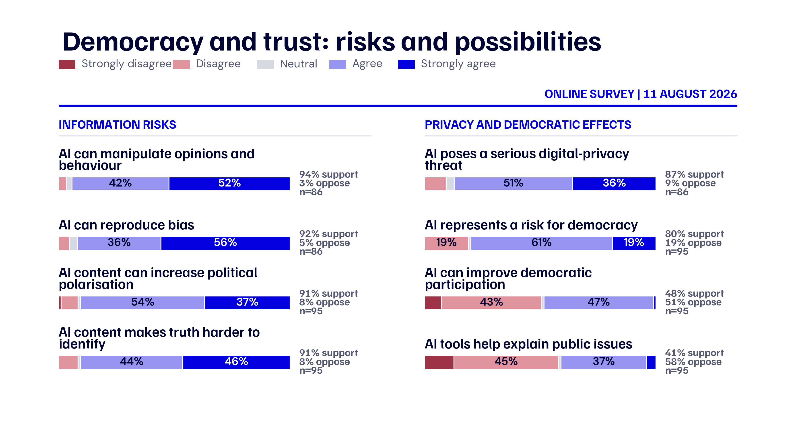
Figure 23: Democracy and trust. The figure shows the full distribution on the seven-point scale grouped into five categories. Agreement, disagreement, and the relevant denominator appear on the right.
That concern also appeared in the broader judgement of democratic effects: 80% agreed at least somewhat that AI poses a risk to democracy. Possible benefits drew less support, with 48% saying AI could improve participation and 51% disagreeing; 41% considered AI tools helpful for understanding public issues, while 58% disagreed. At the same time, 78% of 93 respondents supported public votes or citizen consultations on AI regulation.
Listening across the online responses and the workshops, we heard greater confidence in public participation than in AI as a vehicle for that participation. People wanted verifiable information, safeguards against manipulation, clear provenance for synthetic content and enforceable rules for deepfakes. They also wanted an identifiable person or institution to remain responsible when an information system fails. The overall tone was more wary than in education and work, with public control and legitimacy carrying more weight than technological convenience.
To see whether discussion was followed by any movement in individual views, we compared twenty positions asked before and after the workshops. Four changed across all statistical checks. Figure 24 reports the mean on the original scale from 1 to 7, with each arrow showing a change in scale points rather than the proportion of people who changed their answer.
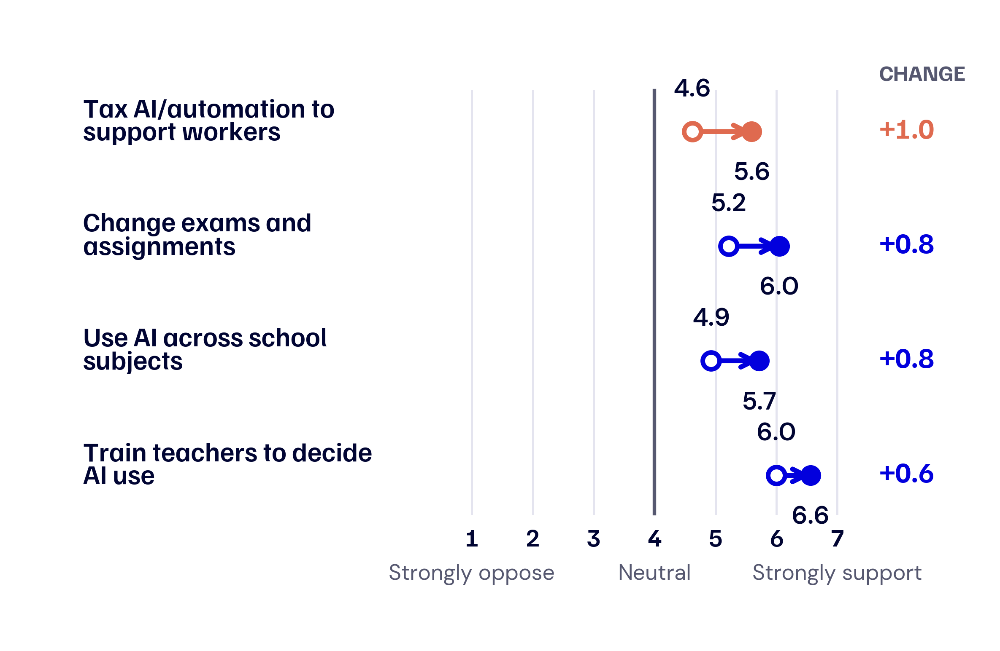
Figure 24: Four before-and-after changes. Open circles show the online mean and filled circles show the post-workshop mean. The change in points on the seven-point scale appears on the right; linked pairs range from n = 37 to 42.
The largest movement concerned taxing gains from AI or automation to assist affected workers, where the mean rose from 4.6 to 5.6. Support also increased for redesigning examinations and assignments, from 5.2 to 6.0; using AI across school subjects, from 4.9 to 5.7; and preparing teachers, from 6.0 to 6.6. These shifts shared a recognisable pattern: people became more supportive where a new use of AI was paired with a concrete safeguard or a fairer distribution of benefits, such as classroom adoption alongside redesigned assessment and prepared teachers, or automation alongside support for affected workers. The comparison cannot tell us what caused the changes, although it does show that these positions remained open to movement.
Alongside the main work of gathering citizen input, our research team developed and tested Murmi, an AI-supported tool for deliberation. Each room experienced two formats, with the topic assignments reversed across rooms. During the human-moderated discussion, participants spoke face to face and recorded ideas on Post-its, which a facilitator then used to summarise the discussion. During the AI-supported discussion, Murmi transcribed the conversation live and extracted draft arguments as floating cards on participants’ phones. A facilitator checked the cards before participants corrected, reacted to and rated them, and Murmi then used the reviewed arguments and ratings to produce an AI-generated common-ground summary that participants could accept or reject. No audio was retained. From a participant’s point of view, the workflow moved from rating one argument card at a time to reviewing the generated report, where the common-ground text was presented together with the number of people who agreed with it.
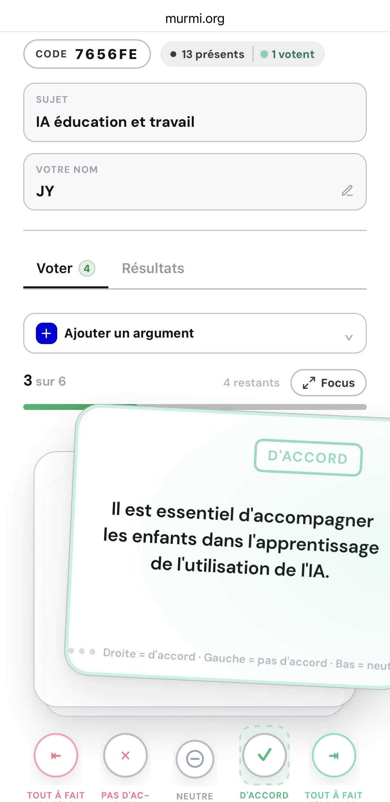
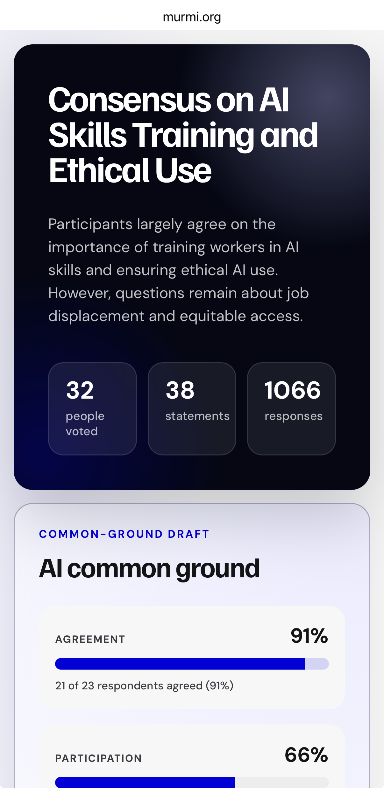
Figure 25: Murmi from a participant’s point of view. Left: participants reviewed argument cards and rated each one on a five-position scale. Right: the generated report presented the resulting AI common ground and showed how many respondents agreed with it. Screenshots from the August 2026 workshops.
Across the AI-supported discussions, Murmi’s extraction produced 96 of the 136 workshop propositions, with participants entering the other 40. Throughout this process, participants could see, react to and vote on one another’s statements before reviewing the common-ground summary. That interaction gave us a rich record of how people reasoned, where their views converged and where disagreement remained. Of the 59 people who reviewed a common-ground summary, 49 accepted it. When we asked about the experience afterwards, the answers showed that the two formats had different strengths.
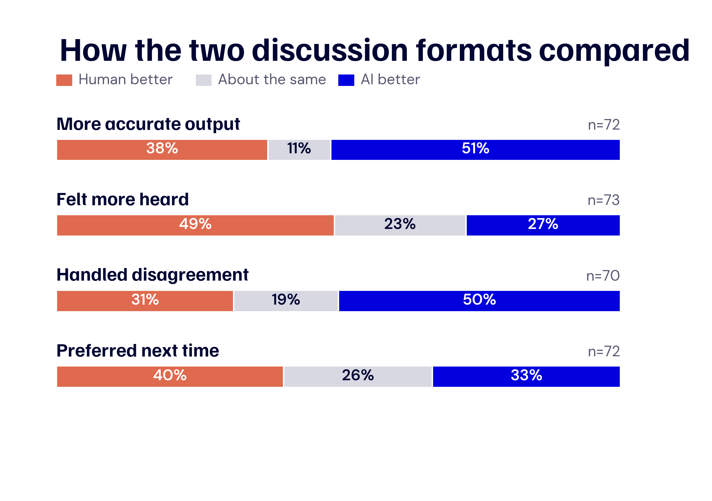
Figure 26: Participant comparison of the two discussion formats. Each bar shows the share rating human moderation higher, both formats about the same, or AI support higher. Human moderation always came first, and the topic changed between formats.
Just over half, 51%, rated AI support higher for producing an accurate final output, and 50% rated it higher for handling disagreement and minority views. The human-moderated format was more often rated higher for helping participants feel heard, by 49% compared with 27%. Asked what they would prefer in a future workshop, 40% chose human moderation, 33% chose AI support and 26% considered the two about the same.
What people reported afterwards fitted what we had observed in the rooms: AI was useful for turning a long conversation into propositions and keeping points of disagreement visible, while the human facilitator played a stronger role in recognition and voice. The comparison remains descriptive because human moderation always came first, AI support came second, and the topic changed between formats.
The experience also varied considerably from one room to another. Across eight questions about participation, voice and the accuracy of the final output, the mean rating for the AI-supported discussion ranged from 4.29 out of 7 in the French-speaking Lausanne group to 5.56 in the English-speaking Zurich group. Ratings of the human-moderated discussion were more closely grouped, between 5.17 and 5.72.
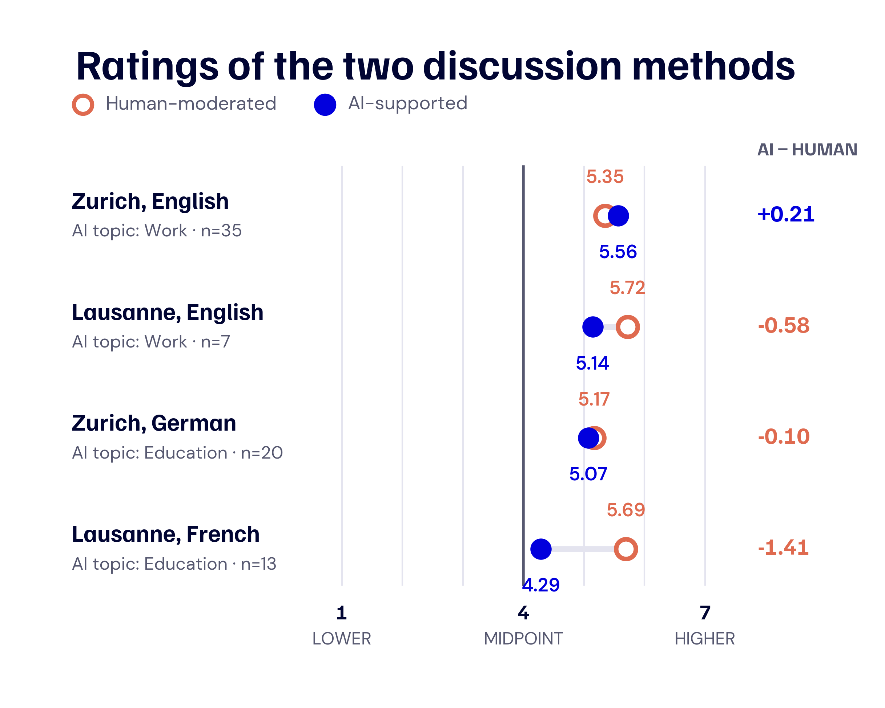
Figure 27: Ratings of the two discussion methods in each workshop. The scale runs from 1 to 7. The value on the right is the AI-supported mean minus the human-moderated mean. Topic assignments differed across rooms, so the results describe each workshop and do not isolate an effect of language or location.
The paired ratings make the contrast especially clear. All 13 respondents in the French-speaking Lausanne group rated the human-moderated discussion higher; in the English-speaking Zurich group, 20 rated the AI-supported discussion higher, 12 favoured human moderation and three gave both formats the same mean rating.
Comments from the participants put human experience behind those numbers. One person in Zurich wrote, “It summarized people’s thoughts in real time, so things were not forgotten, and voting allowed everyone to contribute.” A participant in Lausanne reported, “The AI hallucinated an answer or argument. The platform presented it as fact and flattened the nuances.” Others mentioned being distracted by smartphones, having too little time to review the output, losing detail and feeling unsure about how the summaries had been produced.
The youngest group, in English-speaking Zurich, gave the AI-supported format its highest rating; the older French-speaking Lausanne group used AI less often and gave the format its lowest rating. Because the rooms also differed in size, language, topic, facilitation and implementation, we cannot identify which of these differences produced the pattern. What we can take into future workshops is the need for visible human review, enough time to correct the output and an interface that leaves attention with the people in the conversation.
Read together, the online responses, workshop discussions and post-workshop questionnaire point towards six practical priorities. Table 4.3 assigns possible responsibilities as an interpretation by our research team, since participants discussed the substance of these actions without voting on the institutional allocation.
Table 4.3: Policy priorities with a strong basis in the citizen input
| Priority | Immediate action | Main actors |
|---|---|---|
| Teach verification with tool use | Set learning goals for source checking, error detection, data protection, and responsible use. | Cantons, schools, vocational education, universities |
| Prepare teachers and workers | Tailor training to subjects, occupations, and actual decisions; update it regularly. | Cantons, training providers, employers, social partners |
| Set rules before deployment | Document purpose, permitted use, data handling, quality control, and responsibility before adoption. | Schools, employers, public bodies |
| Keep consequential decisions under human responsibility | Require human review and a clear route for appeal in employment, performance, and educational decisions. | Confederation, cantons, employers, educational institutions |
| Protect information integrity | Make the origin and limits of AI content visible and provide independent scrutiny of manipulation. | Confederation, cantons, media, platform providers |
| Distribute access and benefits fairly | Support under-resourced schools and small firms, and protect workers during transitions. | Confederation, cantons, employers, social partners |
Several discussions reached agreement on the destination while leaving the route unsettled. Table 4.4 brings those open choices together, showing the evidence behind each one and the questions that policymakers still need to test in practice.
Table 4.4: Evidence behind the open policy choices
| Open choice | What citizens said | What should be tested |
|---|---|---|
| When and how pupils should use AI | 70% supported use across school subjects and 62% supported limits to protect independent learning. In the German-speaking Zurich workshop, only 7 of 26 supported introducing AI at around age eleven. | Age- and subject-specific approaches, measured against independent competence, learning progress, privacy, and teacher workload. |
| How assessment should change | 72% supported redesigning examinations and assignments, while almost one quarter opposed it. In a separate live vote, the mean permitted share of AI-supported graded work rose from 13.5% in primary school to 39.3% in higher education. | Formats that show students’ own work, define permitted AI use, and fit each educational stage. |
| How workplace training should be organised | 82% supported training for workers’ current jobs. A single certificate for all workers received only 33% support in the English-speaking Zurich workshop. | Sector-specific models that include small firms, older workers, and occupations with fewer digital resources. |
| How workers should participate | 61% supported worker involvement before AI deployment and 34% opposed it. One online participant wrote, “The wider workforce should also have a say, because they will be affected by the consequences.” | Advance information, risk reporting, consultation, and review of effects after deployment. |
| How productivity gains should be shared | 90% supported sharing gains with workers. A tax on AI or automation received 53% support and 38% opposition, although its mean support rose from 4.6 to 5.6 after the workshop. | Tax, training, transition support, and participation models assessed separately. |
During the two workshop days, the differences in people’s starting points were easy to see. An ETH student who uses AI every day may be ready for faster adoption, for example, while a pensioner in French-speaking Switzerland may think first about grandchildren and what they will still learn for themselves. Both concerns belong in the same conversation. People judged AI through the places where it had entered their own lives: school, work, the information they encountered and the decisions made about them. They were open to tools that could support learning, make work easier, widen access to knowledge or take on routine tasks, provided that human abilities were strengthened and clear limits were in place.
For policymakers, this produces a fairly consistent direction. In education, people asked for critical source checking, prepared teachers, clear rules, protected data and enough room for students to develop their own abilities. At work, they wanted practical training, a fair share of productivity gains, protection from surveillance and human responsibility for consequential decisions. In democracy, they called for stronger defences against manipulation and clearer accountability for AI-generated information. Agreement was strongest around these goals; the right age for classroom use, the design of assessment, worker participation and a tax on automation remained open. Shared principles can guide action now, while disputed choices are tested transparently in real settings and evaluated with the people they affect.
Bringing people together added something that no table or summary can fully capture. The argument cards and AI-generated summary helped participants keep track of a complex discussion, while the face-to-face exchange let them hear why someone with a different life experience reached another conclusion. People did not always change their minds, yet they often understood the disagreement more clearly and found common ground they could live with. That experience is central to the larger task of Swiss AI Futures. As the technology develops, citizen participation should continue through repeated opportunities to examine its effects, question its direction and listen across social differences. Switzerland’s democratic tradition gives us a strong foundation for that work, and a credible Swiss AI future will grow through a public that can understand it, shape it and recognise a place for itself within it.